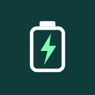

After it downloads, open the file and tap Install. Allow "Install unknown apps" if Android asks. Uninstall any older version first.
Debug build, not tested on a scooter. No live battery values until the BMS protocol is verified.
Open the web app